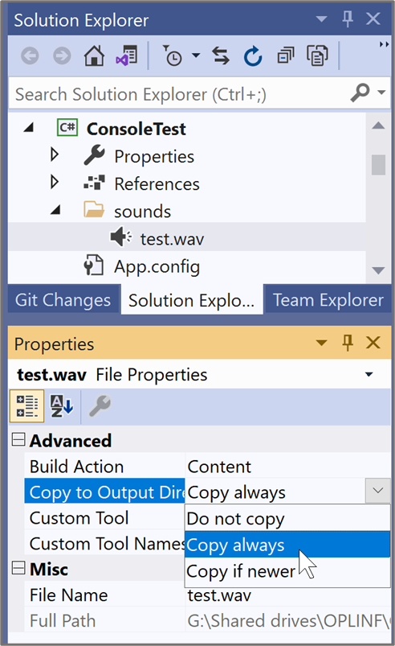
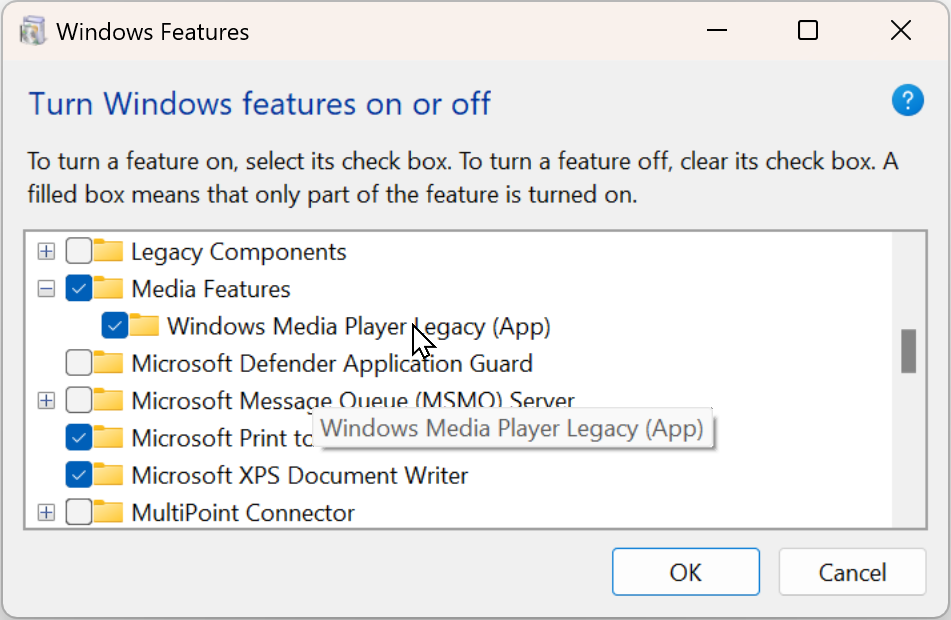
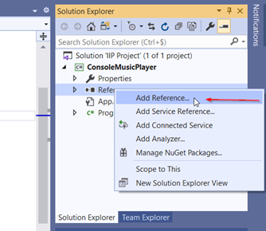
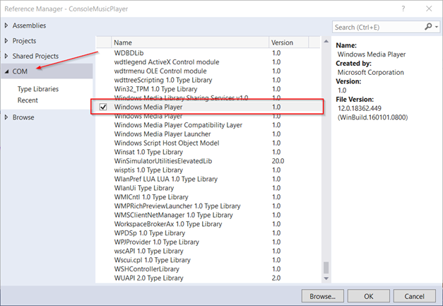

Op Youtube: objecten & strings
Overzicht
| Klasse | Omschrijving |
|---|---|
| BitmapImage | in-memory afbeelding |
| Brushes | bevat een aantal voorgedefinieerde kleuren |
| Clipboard | geeft toegang tot het Window-klembord |
| Color | werken met RGB-kleuren |
| Convert | omzetten (converteren) tussen verschillende datatypes |
| DispatcherTimer | een timer waarmee je op vaste momenten een methode kan uitvoeren |
| Environment | geeft toegang tot de omgeving waarin de applicatie wordt uitgevoerd |
| Math | bevat wiskundige methodes en constanten |
| MediaPlayer | tonen van dialoogvensters |
| MessageBox | tonen van dialoogvensters |
| Random | genereren van willekeurige waarden (getallen) |
| Stopwatch | een timer waarmee je een tijdsspanne kan meten |
| SoundPlayer | mp3 afspelen |
| SystemSounds | windows geluiden afspelen |
| String | werken met tekst |
BitmapImage
Een BitmapImage is een klasse die een in-memory afbeelding voorstelt. Je kunt het gebruiken om een afbeeldingsbestand in te laden en vervolgens weer te geven in een WPF Image-control (zie voorbeeld-code hieronder).
De klasse BitmapImage bevindt zich in de namespace System.Windows.Media.Imaging. Je dient deze namespace dus eerst te importeren (m.b.v. een using-statement), alvorens je deze klasse kunt gebruiken in je code:
using System.Windows.Media.Imaging;
//... rest van je codeConstructie
new BitmapImage(Uri resource);Code voorbeeld
Afbeelding inladen en weergeven in WPF Image-control:
Uri bitmapSource = new Uri("img/A_dotnet/photo1.jpg", UriKind.Relative); // bestand: img/A_dotnet/photo1.jpg
wpfImage.Source = new BitmapImage(bitmapSource);Brushes
Een klasse die een aantal Brush-properties bevat die standaardkleuren voorstellen (bv.: Aqua, Blue, Green, ...). Voor een volledig overzicht van alle beschikbare kleuren, zie de documentatie.
Voorbeeld
Instellen van voor- en achtergrondkleur TextBlock-control:
txtHello.Foreground = Brushes.DarkBlue; // donker blauwe tekstkleur
txtHello.Background = Brushes.LightYellow; // licht gele achtergrondkleurOpmerking: voor algemenere manieren om kleuren te definiëren zie de Color klasse
Clipboard
De klasse Clipboard geeft je toegang tot het klembord van Windows (wordt gebruik bij copy-paste van gegevens).
Methodes
| Methode | Omschrijving |
|---|---|
SetText() |
Plaatst de meegegeven tekst op het klembord van de gebruiker |
GetText() |
Vraagt de huidige (tekstuele) waarde van het klembord op |
Voorbeelden
Tekst op het klembord plaatsen
Clipboard.SetText("text to be copied");Tekstuele inhoud van het klembord opvragen
string content = Clipboard.GetText();Color
Deze klasse wordt gebruikt voor het werken met (RGB-)kleuren.
Methodes
| Methode | Omschrijving |
|---|---|
FromRgb() |
Construeert een Color-object, op basis van de R-, G- en B-componenten van de kleur |
Voorbeeld
Instellen van voor- en achtergrondkleur Button
Color tekstkleur = Color.FromRgb(227, 227, 227);
btnKlikHier.Foreground = new SolidColorBrush(tekstkleur);
Color achtergrondkleur = Color.FromRgb(11, 212, 21);
btnKlikHier.Background = new SolidColorBrush(achtergrondkleur);Convert
De klasse Convert wordt gebruikt om waarden van verschillende types om te zetten naar een ander data-type (bv.: van string naar int).
Methodes
| Methode | Omschrijving |
|---|---|
ToChar() |
Zet een waarde om naar een waarde van het type char |
ToDouble() |
Zet een waarde om naar een waarde van het type double |
ToInt32() |
Zet een waarde om naar een waarde van het type int (32 bits) |
ToString() |
Zet een waarde om naar een string |
ToBoolean() |
Zet een waarde om naar een waarde van het type bool |
Code voorbeelden
ToChar
char letter = Convert.ToChar("a"); // string naar char
char letter2 = Convert.ToChar(65); // int naar char (ASCII-waarde → 'A')ToDouble
double kommagetal = Convert.ToDouble("3.14"); // string naar doubleToInt32
int a = Convert.ToInt32("15"); // string naar int
int b = Convert.ToInt32(3.14); // double naar int → afronding (b = 3)
int c = Convert.ToInt32(3.91); // double naar int → afronding (c = 4)Opmerking: wanneer je een kommagetal (double) omzet naar een geheel getal (int), wordt het getal wiskundig afgerond (d.w.z. < 0.5 naar beneden, >= 0.5 naar boven)
ToString
string str1 = Convert.ToString('a'); // char → string "a"
string str2 = Convert.ToString(32); // int → string "32"
string str3 = Convert.ToString(3.1415); // double → string "3.1415"DateTime
Deze klasse laat toe te werken met datum en tijd.
Aanmaken
Codevoorbeelden:
// enkel datum informatie: jaar, maand, dag
DateTime someDay = new DateTime(2024, 09, 25);
// datum & tijd informatie: jaar, maand, dag, uren, minuten, seconden
DateTime someDayAndTime = new DateTime(2024, 09, 25, 7, 45, 30);
// shortcut om de huidige datum toe te kennen, b.v. 2024-11-05 00:00:00
DateTime today = DateTime.Today;
// shortcut om de huidige datum én tijd toe te kennen, b.v. 2024-11-05 15:45:30.123
DateTime now = DateTime.Now;Jaar, maand en andere eigenschappen
Codevoorbeelden:
DateTime now = DateTime.Now;
int year = now.Year;
int month = now.Month;
int day = now.Day;
int hour = now.Hour;
int minute = now.Minute;
int second = now.Second;
int weekDay = (int)now.DayOfWeek; // 0 = zondag, 1 = maandag...
Datum of tijd aanpassen
Positief argument telt bij, negatief argument trekt af:
DateTime now = DateTime.Now;
DateTime oneSecondLater = now.AddSeconds(1);
DateTime oneMinuteLater = now.AddMinutes(1);
DateTime oneHourLater = now.AddHours(1);
DateTime tomorrow = now.AddDays(1);
DateTime yesterday = now.AddDays(-1);
DateTime oneMonthLater = now.AddMonths(1);
DateTime oneYearLater = now.AddYears(1);
DateTime oneYearBefore = now.AddYears(-1);DatumTijdsverschillen: TimeSpan
Verschillen tussen datumtijden leveren een TimeSpan instantie op:
DateTime start = new DateTime(2024, 10, 05, 10, 0, 0);
DateTime end = DateTime.Now;
TimeSpan difference = end - start;
// toon het verschil in dagen, uren en minuten
Console.WriteLine($"Het verschil is {difference.Days} dagen, {difference.Hours} uren en {difference.Minutes} minuten");
// toon het verschil in minuten
Console.WriteLine($"Het verschil uitgedrukt in minuten is {difference.TotalMinutes} minuten.");
Geformatteerde weergave
De omzetting naar een leesbare weergave kan met een format specifier, die je meegeeft met ToString():
DateTime todayAndNow = DateTime.Now;
Console.WriteLine($"Short date format: {todayAndNow.ToString("d")}");
Console.WriteLine($"Long date format: {todayAndNow.ToString("D")}");
Console.WriteLine($"Custom date format 1: {todayAndNow.ToString("dd/MM/yyyy")}");
Console.WriteLine($"Custom date format 2: {todayAndNow.ToString("dd/MM/yyyy hh:mm:ss")}");Je kan het ook rechtstreeks in string interpolatie gebruiken:
Console.WriteLine($"Short date format (e.g. 25/09/24): {todayAndNow:d}");
Console.WriteLine($"Long date format (e.g. woensdag 25 september 2024): {todayAndNow:D}");
Console.WriteLine($"Custom date format 1 (e.g. 25/09/24): {todayAndNow:dd/MM/yyyy}");
Console.WriteLine($"Custom date format 2 (e.g. 25/09/2024 01:22:18): {todayAndNow:dd/MM/yyyy hh:mm:ss}");
Short date format: 25/11/2024 Long date format: maandag 25 november 2024 Custom date format 1: 25/11/2024 Custom date format 2: 25/11/2024 03:18:21
Voor een volledige lijst codes, zie b.v. https://www.c-sharpcorner.com/blogs/date-and-time-format-in-c-sharp-programming1
DispatcherTimer
Hiermee kan je een teller maken die een methode uitvoert met vaste tussentijden.
Properties, methodes en events
| Property | Omschrijving |
|---|---|
Interval |
tussentijd (type TimeSpan) |
IsEnabled |
boolean die aangeeft of de timer loopt of niet |
| Methode | Omschrijving |
|---|---|
Start() |
start de stopwatch |
Stop() |
stop de stopwatch |
| Event | Omschrijving |
|---|---|
Tick |
vuurt af met vaste intervallen (zie de Interval property) |
Voorbeelden
teller met start- en stopknop
Een eenvoudige WPF teller die met een knop kan gestart worden, XAML:
<TextBlock x:Name="txtCount" Text="0" TextAlignment="Right" HorizontalAlignment="Left" Height="100"
Margin="130,25,0,0" VerticalAlignment="Top" Width="151" FontSize="48"/>
<Button x:Name="btnStart" Content="start" HorizontalAlignment="Left" Padding="10,5" Margin="20,25,0,0"
VerticalAlignment="Top" Click="BtnStart_Click" />
<Button x:Name="btnStop" Content="stop" HorizontalAlignment="Left" Padding="10,5" Margin="20,90,0,0"
VerticalAlignment="Top" Click="BtnStop_Click" IsEnabled="False"/>Het zit in System.Windows.Threading, dus voeg het boveaan toe met een using:
using System.Windows.Threading;De C# code-behind:
private DispatcherTimer timer = new DispatcherTimer();
private int count = 0;
public MainWindow()
{
InitializeComponent();
timer.Interval = TimeSpan.FromMilliseconds(1000);
timer.Tick += Timer_Tick;
}
private void Timer_Tick(object sender, EventArgs e)
{
count++;
txtCount.Text = count.ToString();
}
private void BtnStart_Click(object sender, RoutedEventArgs e)
{
timer.Start();
btnStart.IsEnabled = false;
btnStop.IsEnabled = true;
}
private void BtnStop_Click(object sender, RoutedEventArgs e)
{
timer.Stop();
btnStart.IsEnabled = true;
btnStop.IsEnabled = false;
}
Environment
De klasse Environment biedt een aantal properties en methodes aan om informatie te verkrijgen over de omgeving waarin de applicatie wordt uitgevoerd (locale, besturingssysteem, ...).
Properties en methodes
| Property | Omschrijving |
|---|---|
NewLine |
Newline-karakter voor het besturingssysteem waarop de applicatie wordt uitgevoerd |
SpecialFolder.Desktop |
Pad naar de desktop op de huidige computer |
SpecialFolder.MyDocuments |
Pad naar de documentenmap op de huidige computer |
| Methode | Omschrijving |
|---|---|
Exit |
Wordt gebruikt om de applicatie (voortijdig) af te sluiten |
Code voorbeelden
Platform-onafhankelijke NewLine (Windows/Linux/Mac OSX/...)
Console.Write($"Regel 1{Environment.NewLine}Regel 2");Regel 1 Regel 2
Pad naar Desktop opvragen
string pathToDesktop = Environment.GetFolderPath(Environment.SpecialFolder.Desktop);
Console.log($"Pad naar mijn desktop: {pathToDesktop}");Pad naar mijn desktop: C:\Users\rogie\Desktop
Programma afsluiten
Environment.Exit(0);Opmerking: het argument (0) wordt een exit-code genoemd. Een exit-code van 0 geeft aan dat het programma succesvol (zonder errors) beëindigd is. Een exit-code verschillend van 0, wordt gebruikt om aan te geven dat er tijdens de uitvoer van het programma iets foutgelopen is. De waarde duidt dan het type fout aan (zelfgekozen).
LINQ
De .NET namespace System.Linq biedt een uitbreiding van C# waarmee je met SQL-achtige queries allerlei databronnen kan bevragen. Een voorbeeld voor een array:
int[] scores = new int[] { 97, 54, 92, 81, 60 };
// Define the query expression.
int[] scoresAbove80 =
(from score in scores
where score > 80
select score).ToArray();
// Execute the query.
Console.Write(string.Join(", ", scoresAbove80));
97, 92, 81
LINQ extensie methodes voor collecties
Linq biedt ook een aantal extensie methodes voor collecties
Math
De klasse Math bevat tal van wiskundige methodes en properties.
Properties en methodes
| Property | Omschrijving |
|---|---|
PI |
Benadering van het getal pi |
| Methode | Beschrijving | Voorbeeld |
|---|---|---|
Abs() |
absolute waarde | Math.Abs(-7); // resultaat: 7 |
Ceiling() |
getal naar boven afronden | Math.Ceiling(3.14); // resultaat: 4.0 |
Floor() |
getal naar beneden afronden | Math.Floor(3.14); // resultaat: 3.0 |
Pow() |
machtsverheffing | Math.Pow(5, 2); // resultaat: 5² = 25 |
Round() |
getal afronden tot aantal decimalen | Math.Round(3.1415, 2); // resultaat: 3.14 |
Sqrt() |
vierkantswortel (square root) | Math.Sqrt(25); // resultaat: 5.0 |
Max() |
grootste van twee getallen | Math.Max(10, 20); // resultaat: 20.0 |
Voorbeelden
Berekening oppervlakte cirkel (m.b.v. PI)
int straal = 5;
double oppervlakte = straal * straal * Math.PI;
Console.WriteLine($"De oppervlakte bedraagt: {oppervlakte}");De oppervlakte bedraagt: 78,5398163397448
Wiskundige methodes
double a = Math.Ceiling(3.14); // resultaat: 4.0
double b = Math.Floor(3.14); // resultaat: 3.0
double c = Math.Pow(5, 2); // resultaat: 5² = 25
double d = Math.Round(3.1415, 2); // resultaat: 3.14 (afgerond tot op 2 cijfers na de komma)
double e = Math.Sqrt(16); // resultaat: vierkantswortel 16 = 4
int grootste = Math.Max(25, 12); // resultaat: grootste → 25
int kleinste = Math.Min(30, 15); // resultaat: kleinste → 15
Console.WriteLine($"a: {a}");
Console.WriteLine($"b: {b}");
Console.WriteLine($"c: {c}");
Console.WriteLine($"d: {d}");
Console.WriteLine($"e: {e}");
Console.WriteLine($"grootste: {grootste}");
Console.WriteLine($"kleinste: {kleinste}");a: 4 b: 3 c: 25 d: 3,14 e: 4 grootste: 25 kleinste: 15
Media
Overzicht
Er zijn verschillende klassen waarmee je media kan afspelen in .NET:
| Klasse | Te gebruiken voor | Console? | WPF? | Opmerking |
|---|---|---|---|---|
System.Media.SystemSounds |
Windows-sounds | enkel .NET Framework | ja | |
System.Media.SoundPlayer |
audio (enkel .wav) | enkel .NET Framework | ja | |
System.Media.MediaPlayer |
audio (meeste formaten) | nee | ja | |
WMPLib.WindowsMediaPlayer |
audio (meeste formaten) | ja | ja | referentie naar WMP library nodig |
System.Windows.Controls.MediaElement |
video (meeste formaten) | nee | ja | dit is een WPF control, dus makkelijk te integreren in WPF toepassingen |
De meest flexibele oplossing is dus gebruik maken van een externe bibliotheek als WMPLib.
Media toevoegen aan je project
Om media toe te voegen, volg deze stappen:
- maak een map aan in je project voor de media bestanden via Add, New Folder...
- drag drop de media bestanden in deze map uit verkenner
- selecteer bij de properties voor elk media bestand bij Build Action Content en bij Copy to Output Directory Copy always:

Code voorbeelden
Windows sound afspelen
Windows heeft een heel aantal ingebouwde geluidseffecten, die je vrij kan gebruiken in je .NET projecten. De syntax is eenvoudig (zie ook https://www.wpf-tutorial.com/audio-video/playing-audio/):
...
using System.Media;
...
// play the Asterisk Windows sound effet
SystemSounds.Asterisk.Play();
- de bewuste sound moet effect effectief ingeschakeld zijn in Windows en er moet een geluid voor gekozen zijn; hoe je dat moet doen vind je op https://www.windowscentral.com/how-customize-sound-effects-windows-10
- dit werkt enkel met WPF en .NET Framework Console apps, niet met .NET8 Console apps, zie overzicht
.wav file afspelen met SoundPlayer
Behalve starten en stoppen van geluiden biedt SoundPlayer weinig functionaliteit; volume regelen of pauzeren b.v. kan niet.
Schematisch codefragment:
...
using System.Media;
...
string path = System.IO.Path.Combine(AppDomain.CurrentDomain.BaseDirectory, "sounds/test.wav");
SoundPlayer player = new SoundPlayer(path);
player.Load(); // wacht tot het geluid ingeladen is
player.PlaySync(); // PlaySync(): wacht met uitvoeren van de rest van de code tot het geluid afgespeeld is
// Play(): speel het geluid af en ga ondertussen verder met de rest van de code
...
player.Stop(); // stop het geluid voortijdig
- dit werkt enkel met WPF en .NET Framework Console apps, niet met .NET8 Console apps
Geluid afspelen met MediaPlayer
Dit is een prima klasse om geluiden af te spelen in WPF toepassingen, met veel functionaliteit als starten, pauzeren, stoppen, volume, balans, detecteren wanneer het geluid gestopt is enz... In Console toepassingen werkt het evenwel niet; daar gebruik je best de Windows Media Player library (zie volgend onderdeel). Let er op dat Windows Media Player ingeschakeld is in Windows:
Schematisch codefragment:
...
using using System.Windows.Media;
...
MediaPlayer mediaPlayer = new MediaPlayer();
mediaPlayer.MediaEnded += MediaPlayer_MediaEnded;
mediaPlayer.Open(new Uri("Music/some-song.mp3", UriKind.Relative));
mediaPlayer.Play();
// callback method when media has finished playing
private void MediaPlayer_MediaEnded(object? sender, EventArgs e)
{
MessageBox.Show("song has finished");
}Andere methodes en properties die je kan gebruiken:
mediaPlayer.Pause(); // pauzeer
mediaPlayer.Stop(); // stop
mediaPlayer.Balance = -1; // enkel linkerspeaker
mediaPlayer.Position = new TimeSpan(0, 0, 0, 30); // stel speelpositie in op 30s
mediaPlayer.SpeedRatio = 1.5; // speel 50% sneller
mediaPlayer.Volume = 0.5; // zet volume op 50%
Geluid afspelen met Windows Media Player library
Met de Windows Media Player-library kan je een brede waaier aan audioformaten afspelen in WPF én Console apps. Het bevat functionaliteit om liedjes te starten, pauzeren, het volume te regelen, etc. Let er weer op dat Windows Media Player ingeschakeld is in Windows:
Eerst moet je een referentie naar de library toevoegen aan je project. Dit kan in de Solution Explorer met de rechtermuisknop, “Add Reference...”:

Selecteer onder “COM” in de lijst “Windows Media Player”, en klik OK:

Codefragment (let op de using WPMLib bovenaan):
...
using WMPLib;
...
WMPLib.WindowsMediaPlayer wmPlayer = new WMPLib.WindowsMediaPlayer();
wmPlayer.URL = System.IO.Path.Combine(AppDomain.CurrentDomain.BaseDirectory, "sounds/music.mp3");
wmPlayer.controls.play();Andere methodes en properties die je kan gebruiken:
wmPlayer.controls.pause(); // pauzeer
wmPlayer.controls.stop(); // stop
wmPlayer.settings.volume = 50; // zet volume op 50%
wmPlayer.settings.mute = true; // muten
- hoewel deze library als wat verouderd gezien wordt, werkt het nog steeds in een brede waaier van toepassingen
Video afspelen met MediaElement WPF control
MessageBox
Een MessageBox is een dialoogvenster dat een boodschap voor de gebruiker bevat (bv.: een foutmelding, een bevestiging van een actie, ...).
Methodes
| Methode | Omschrijving |
|---|---|
Show() |
Toon het dialoogvenster op het scherm |
Code voorbeelden
Eenvoudig dialoogvenster
MessageBox.Show("Hello, World!");Dialoogvenster met icoon
MessageBoxResult result = MessageBox.Show("Het bestand is opgeslagen", "", MessageBoxButton.OK, MessageBoxImage.Information);OK/Cancel ialoogvenster
MessageBoxResult result = MessageBox.Show(
"Je wijzigingen gaan mogelijks verloren. Ben je zeker dat je wil afsluiten?",
"WAARSCHUWING",
MessageBoxButton.OKCancel,
MessageBoxImage.Exclamation
);
if (result == MessageBoxResult.OK)
{
Environment.Exit(0);
}
Random
Met de klasse Random kan je een willekeurige waarde (getal) genereren.
Constructie
Random rnd = new Random();Methodes
| Methode | Omschrijving |
|---|---|
Next() |
Genereert een willekeurig getal tussen de meegegeven boven- en ondergrens |
Code voorbeeld
Willekeurig getal van 1 tot en met 20
Random rnd = new Random();
int getal1 = rnd.Next(1, 21); // de bovengrens (21) is exclusief!!!
int getal2 = rnd.Next(1, 21); // de bovengrens (21) is exclusief!!!
Console.WriteLine($"Random getal 1: {getal1}");
Console.WriteLine($"Random getal 2: {getal2}");Random getal 1: 15 Random getal 2: 6
Opmerking: de bovengrens is exclusief. Dat betekent dat het gegenereerde getal steeds strikt kleiner zal zijn dan de opgegeven bovengrens. Wil je bv. een willekeurig getal berekenen van 1 t.e.m. 5, gebruik je de parameters Next(1, 6).
Stopwatch
Een stopwatch is een tijdsmeter die je kan starten, stoppen en resetten.
Properties en methodes
| Property | Omschrijving |
|---|---|
Elapsed |
verstreken tijd (type TimeSpan) |
IsRunning |
boolean die aangeeft of de stopwatch loopt of niet |
| Methode | Omschrijving |
|---|---|
Reset() |
reset de stopwatch |
Start() |
start de stopwatch |
Stop() |
stop de stopwatch |
Voorbeelden
Tijd verstreken tot toetsdruk (Console)
Stopwatch stopwatch = new Stopwatch();
stopwatch.Start();
Console.WriteLine("Timer is gestart. Druk een toets...");
Console.ReadKey(true);
TimeSpan elapsed = stopwatch.Elapsed; // verstreken tijdsspanne
stopwatch.Stop();
Console.WriteLine($"Timer is gestopt. De verstreken tijd is {elapsed.Seconds}.{elapsed.Milliseconds}s");
Console.ReadKey();Timer is gestart. Druk een toets... Timer is gestopt. De verstreken tijd is 2.47s
Starten, stoppen en resetten (WPF)
<Button x:Name="btnStart" Content="start" Click="BtnStart_Click" HorizontalAlignment="Left" Padding="5,2"
Width="50" Margin="20,25,0,0" VerticalAlignment="Top" />
<Button x:Name="btnLap" Content="lap" Click="BtnLap_Click" IsEnabled="False" Padding="5,2" HorizontalAlignment="Left"
Width="50" Margin="20,65,0,0" VerticalAlignment="Top" />
<Button x:Name="btnStop" Content="stop" Click="BtnStop_Click" IsEnabled="False" Padding="5,2" HorizontalAlignment="Left"
Width="50" Margin="20,105,0,0" VerticalAlignment="Top" />
<Button x:Name="btnReset" Content="reset" Click="BtnReset_Click" IsEnabled="False" Padding="5,2" HorizontalAlignment="Left"
Width="50" Margin="20,145,0,0" VerticalAlignment="Top" />
<ListBox x:Name="lbxLaps" Margin="95,25,0,0" Width="200" Height="140" HorizontalAlignment="Left" VerticalAlignment="Top" />
private Stopwatch watch = new Stopwatch();
public MainWindow() {
InitializeComponent();
}
private void SetButtonStates() {
btnStart.IsEnabled = !watch.IsRunning;
btnLap.IsEnabled = watch.IsRunning;
btnStop.IsEnabled = watch.IsRunning;
}
private void BtnStart_Click(object sender, RoutedEventArgs e) {
watch.Start();
SetButtonStates();
}
private void BtnLap_Click(object sender, RoutedEventArgs e) {
TimeSpan elapsed = watch.Elapsed;
lbxLaps.Items.Add(new ListBoxItem() { Content = elapsed.ToString() });
SetButtonStates();
}
private void BtnStop_Click(object sender, RoutedEventArgs e) {
watch.Stop();
SetButtonStates();
}
private void BtnReset_Click(object sender, RoutedEventArgs e) {
lbxLaps.Items.Clear();
watch.Reset();
}
String
De String klasse is een zogenaamde wrapper class, of uitbreiding van het string type. Beiden zijn uitwisselbaar; deze fragmenten zijn dus gelijkwaardig:
// de "string" notatie krijgt de voorkeur
string[] arr1 = new string[] { "blauw", "rood", "groen" };
string samengevoegd = string.Join(", ", arr1);
// de "String" notatie is technisch gelijkwaardig
String[] arr1 = new String[] { "blauw", "rood", "groen" };
String samengevoegd = String.Join(", ", arr1);→ de eerste notatie is gebruikelijker; kwestie van gewoonte
Properties en methodes
| Property | Omschrijving |
|---|---|
Length |
aantal karakters |
Empty |
lege string constante |
| Methode | Omschrijving |
|---|---|
CompareTo() |
twee strings alfabetisch vergelijken |
Contains() |
controleert of de string een gegeven string of char bevat |
IsNullOrEmpty() |
gaat na of de string gelijk is aan null of de lege string ("") |
Join() |
voegt een reeks waarden samen tot één string met daartussen een separator |
IndexOf(), LastIndexOf() |
eerste/laatste positie zoeken van een karakter of tekst in de string (-1 indien niet gevonden) |
Replace() |
voegt een reeks waarden samen tot één string met daartussen een separator |
Split() |
een string rond een bepaald karakter opsplitsen in een reeks waarden |
StartsWith(), EndsWith() |
controleert of de string met een bepaalde tekst begint of eindigt |
Substring() |
deel van een string nemen |
ToLower(), ToUpper() |
omzetten naar kleine letters / hoofdletters |
Trim() |
karakters wegnemen (trimmen) aan het begin en het einde |
String's vergelijken
Je kunt string's op twee verschillende maniere vergelijken:
- met behulp van de
==-operator (trueindien beide string's dezelfde zijn, andersfalse) - met de methode
CompareTo, return-waarden:- −1 indien de string kleiner is dat de gegeven string
- 0 indien beide string's gelijk zijn aan elkaar
- 1 indien de string groter is dan de gegeven string
string str1 = "banaan";
string str2 = "banaan";
string str3 = "citroen";
string str4 = "appel";
bool test1 = str1 == str2; // true; "banaan" is gelijk aan "banaan"
int test2 = str1.CompareTo(str2); // 0; "banaan" is gelijk aan "banaan"
int test3 = str1.CompareTo(str3); // −1; "banaan" komt alfabetisch vóór "citroen"
int test4 = str1.CompareTo(str4); // 1; "banaan" komt alfabetisch ná "appel"
Code voorbeelden
Lengte bepalen
De lengte bepaal je met de Length property
string str1 = "Now have that tasty morning burger.";
int len = str1.Length; // 35, dus inclusief spaties, leestekens enz...Trimmen
Trimmen betekent karakters links en/of rechts wegsnijden:
// karakters trimmen aan het begin en einde
string str1 = " ,Guitar, drum, Bass,. ";
str1 = str1.Trim(); // ",Guitar, drum, Bass,."
str1 = str1.Trim(new char[] { ',', '.' }); // "Guitar, drum, Bass"Controle op deelstrings
string str2 = "Now have that tasty morning burger.";
int int1 = str2.IndexOf("at"); // 11
int int2 = str2.IndexOf('z'); // -1; not found
int int3 = str2.LastIndexOf('e'); // 32
bool bool1 = str2.StartsWith("No"); // true
bool bool2 = str2.Contains("that"); // true
bool bool3 = str2.Contains('X'); // falseTekst vervangen, omzetten, inkorten
string str1 = "Hey hey hey, please DO NOT touch that!";
string str2 = str1.Substring(0, 21); // "Hey hey hey, please DO"
string str3 = str1.ToLower(); // "hey hey hey, please do not touch that!"
string str4 = str1.ToUpper(); // "HEY HEY HEY, PLEASE DO NOT TOUCH THAT!"
string str4 = str1.Replace("hey", "yo"); // "Hey yo yo, please DO NOT touch that!" → hoofdlettergevoelig, vervangt alle
Nagaan of een string leeg is
Gebruik string.IsNullOrEmpty():
string str1 = "test";
bool bool1 = string.IsNullOrEmpty(str1); // False
string str2 = null;
bool bool2 = string.IsNullOrEmpty(str2); // True
string str3 = "";
bool bool3 = string.IsNullOrEmpty(str3); // True
string str4 = " ";
bool bool4 = string.IsNullOrEmpty(str4); // False - een spatie is geen lege string!Je kan dit gebruiken om na te gaan of de gebruiker een TextBox heeft ingevuld
if (string.IsNullOrEmpty(txtNaam))
{
lblFoutboodschap.Content = "Dit veld is verplicht";
}
else
{
lblFoutboodschap.Content = "";
}of korter met de ternaire operator:
lblFoutboodschap.Content = string.IsNullOrEmpty(txtNaam) ? "Dit veld is verplicht" : "";Lijst of array samenvoegen tot een string, gescheiden door een tekst
Gebruik string.Join(). Voorbeeld voor een lijst:
List<string> fruit = new List<string>() { "appel", "banaan", "citroen", "peer" };
string reeks = string.Join(" - ", fruit);
Console.WriteLine(reeks);appel - banaan - citroen - peer
Voorbeeld voor een array:
int[] getallen = { 5, 7, 12, 8, 3 }; // → int[] array
string samengevoegd = string.Join(", ", getallen); // "5, 7, 12, 8, 3" → één string
Console.WriteLine(samengevoegd);5, 7, 12, 8, 3
String splitsen naar een array
rond spaties
string zin = "dit is een zin met meerdere woorden";
string[] woorden = zin.Split(' '); // verdeel zin in woorden
foreach (string woord in woorden)
{
Console.WriteLine(woord);
}dit is een zin met meerdere woorden
rond een karakterlijst
Je kan als parameter van Split() een array van karakters opgeven waarrond gesplitst moet worden:
string txt = "0477/234.56.78"; // → één string
string[] parts2 = txt.Split(new char[] { '/', '.' }); // { "0477", "234", "56", "78" } → string[] array